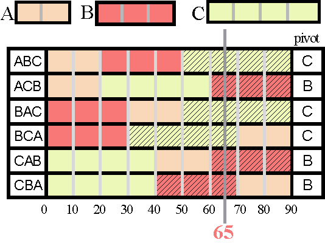
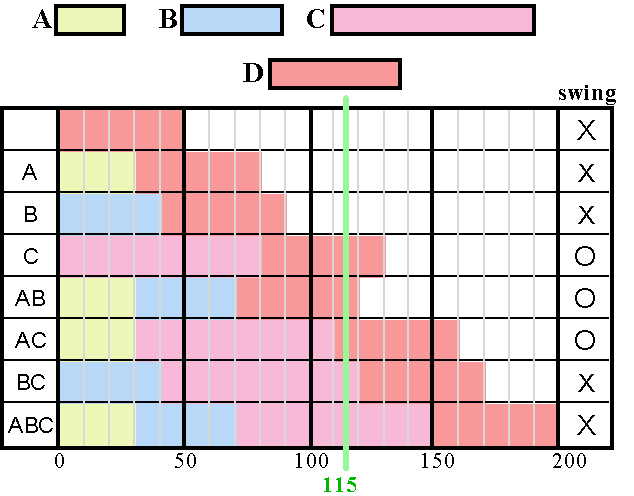

Infoseek で宣伝してくれてます。
(政治・法律・社会>日本の政治>選挙・住民投票)
投票力指数はどうやって使うの？
「東京都議会の投票力を測る」
のページを御覧下さい.
以下をクリックして下さい
(
英語版はこちら )
投票力指数を計算するページへジャンプ
使い方
既に(1999年10月20日現在の)
参議院の例
(下記参照)が書き込まれていますので,
好きなように数値を書き換えて使う事ができます.
表：参議院会派別所属議員(1998年10月20日現在)
| 会派 |
自由民主党 |
民主党・新緑風会 |
公明党 |
日本共産党 |
社会民主党 ・護憲連合 |
自由党 |
参議院の会 |
二院クラブ・自由連合 |
各派に属しない議員
(下記注1参照) |
| 議員数 |
105 |
56 |
24 |
23 |
13 |
12 |
10 |
4 |
5 |
会派がプレイヤーに対応し, 議員数を「票数」として入力します.
(投票における政党や投票者を, ゲーム理論ではプレイヤーと呼びます.)
注1 ：
「各派に属しない議員」は, 票数1のプレイヤーとし,
それが5名いるので,
「票数」に1を, 「プレイヤー数」に5を
入力します.
他は, プレイヤー数は1です.
最初は, 過半数のボタンが押してありますので,
「過半数の票を集めると, 議案を通すことができる状況」
を分析することになります.
では「票数」や「勝利に必要な票数」を変えて,
「指数を計算する」を押して見ましょう.
また, 衆議院や参議院，東京都議会，のHPを見て, いろんな例で計算してみましょう.
例えばアメリカの大統領戦でも, プレイヤー(州)が51と多くなるけど,
計算時間はそんなにかかりませんよ！
あとは, 会社の持ち株で計算しても面白いかも.
M. Bilbao による EU の投票力指数のページ.
投票力指数は、議会などで投票による決定を行う際,
各投票主体が決定にどれだけの影響力を持つかを評価する尺度の一つです.
影響力は, 持っている票数に対応すると一般に思われがちですが,
実はそんな簡単ではありません.
例えば, A, B, C の3人で投票を行うとし,
(A, B, C)
それぞれが
(5票, 5票, 1票)持っているとしましょう.
過半数(6票)を取ると議案が通るとすると,
3人のうち2人が賛成しないと議案は通りません.
この場合A,B,Cの3人は,
議案を通す事に関しては同じ力を持っていると考えた方が自然です.
政治の場面で「小数政党がキャスティングボートを握る」事があるのは,
このような状況が起こっている可能性があります.
（ちなみに キャスティングボード（casting board?） ではなく、
キャスティングボート （casting vote） が正しい単語です.
本来の意味は、「賛否同数のとき議長が投ずる一票」です.
検索エンジンで引くと、 そりゃもう沢山....）
投票力指数は, 票数からだけでは見えない,
影響力を測るために提案されたものです.
現在までに, いくつかの投票力指数が提案されています.
してしばしば用いられるものには,
Shapley-Shubik指数，Banzhaf指数，Deegan-Packel指数等があります.
以下では,
Shapley-Shubik指数，Banzhaf指数，Deegan-Packel指数 について,
簡単に解説しておきます.
投票の仕組みは,
ゲーム理論において「投票ゲーム」という枠組みで研究されています.
下記の解説は, 本当に簡単なものです.
本来は, 投票力指数は,
「ゲーム理論」における「公理的なアプローチ」によって,
定義されるものです.
詳しくは,
武藤滋夫, 小野理恵, 「投票システムのゲーム分析」, 日科技連, 1998,
等の専門書を御覧下さい.
| Shapley-Shubik 指数 (S-S指数)
|
ゲーム理論の研究者 Shapley によって提案された,
協力ゲームの解であるShapley値を,
ShapleyとShubikが投票ゲームに適用したものがS-S指数です.
例えば, A, B, C の3人で投票を行うとし,
(A, B, C)
それぞれが
(20票, 30票, 40票)持っているとし,
65票
を取ると議案が通るとして,
S-S 指数を計算してみましょう.
以下のように, A, B, C の3人を並べる6通りの方法を考えます.
各並べ方について,
初めて65票以上になった時に加わった人をピヴォット(pivot)と呼びます.

あとは, 各人がピヴォットになった割合を計算します.
Aは, 6通りの内0回ですから, S-S 指数の値は 0/6=0 です.
Bは, 6通りの内3回ですから, S-S 指数の値は 3/6=0.5 です.
Cは, 6通りの内3回ですから, S-S 指数の値は 3/6=0.5 です.
Aは20票持っていても, 実は影響力が全く無い事が分かります.
Bは30票, Cは40票持っていても,
S-S指数はどちらも0.5で, 実は影響力は同じである事が分かります.
Banzhaf 指数（Bz指数）は,
法律家 Banzhaf によって1965年に定義された指数です.
その後 Dubey と Shapley によって, 公理的特徴付けがなされています.
例えば, A, B, C, D の4人で投票を行うとし,
(A, B, C, D)
それぞれが
(30票, 40票, 80票, 50票)持っているとし,
115票
を取ると議案が通るとして,
D の Bz 指数を計算してみましょう.
以下のように, A, B, C の3人のうち何人かが集まる8通りの方法を考えます.
各集まり方について,
D を加えて115票以上になった時 D はスウィングになっていると言います.

あとは, Dがピヴォットになった割合を計算すると,
8回のうち3回ですから, D の絶対 Bz 指数の値は, 3/8 です.
同様にして他のプレイヤーの絶対 Bz 指数も求めると,
(A, B, C, D)の絶対Bz指数は
(1/8, 3/8, 5/8, 3/8) となります.
Cは総数の200票のうち, 80票しか持っていないにも関わらず,
5/8 と大きな力を持っている事が分かります.
Bz指数の総和は1になるとは限らない点に注意してください.
総和が1になるように, 絶対Bz指数を定数倍したものを,
正規Bz指数と呼びます.
上記の例では, 絶対Bz指数を2/3 倍すると
(A, B, C, D)の正規Bz指数が求まり,
(2/24, 6/24, 10/24, 6/24) となります.
Deegan-Packel 指数（D-P指数）は,
ゲーム理論の研究者 Deegan と Packel によって提案された指数です.
例えば, A, B, C, D, E の5人で投票を行うとし,
(A, B, C, D, E)
それぞれが
(20票, 4票, 3票, 1票, 1票)持っているとし,
24票
を取ると議案が通るとしましょう.
ある集まりが, 24票以上持っていて,
一人でも抜けると24票未満になってしまうとき,
極小勝利提携と呼びます.
上の例で, 極小勝利提携は {A,B}, {A,C,D}, {A,C,E}の3つがあります.
各極小勝利提携について, 1を等分した値を得るとし,
それを加えて, 極小勝利提携の数(この例では3)で割ったものが
D-P指数です.
| A | B | C | D | E |
| 票数 | 20 | 4 | 3 | 1 | 1 |
| 極小勝利提携 |
| 計 |
| {A, B} |
1/2 | 1/2 | 0 | 0 | 0 | 1 |
| {A, C, D} |
1/3 | 0 | 1/3 | 1/3 | 0 | 1 |
| {A, C, E} |
1/3 | 0 | 1/3 | 0 | 1/3 | 1 |
| 総和 |
7/6 | 1/2 | 2/3 | 1/3 | 1/3 | 3 |
| 総和/3 |
7/18 | 3/18 | 4/18 | 2/18 | 2/18 | 1 |
以上より,
(A, B, C, D, E)
それぞれのD-P指数は,
(7/18, 3/18, 4/18, 2/18, 2/18)となります.
CはBより票数が少ないにもかかわらず,
D-P指数はCの方がBより大きくなっています.
これより, CがBより影響が強くなる場面が存在しうることが, 予想されます.
武藤滋夫, 小野理恵, 「投票システムのゲーム分析」, 日科技連, 1998.
鈴木光男,武藤滋夫, 「協力ゲームの理論」, 東京大学出版, 1985.
岡田章, 「ゲーム理論」, 有斐閣, 1996.
松井知己, 松井泰子,
「重み付き多数決ゲームにおける投票力指数の計算について」,
第10回ＲＡＭＰシンポジウム論文集, 京大会館, 1998年9月24日.
Tomomi MATSUI and Yasuko MATSUI, "A Survey of Algorithms for Calculating Power Indices of Weighted Majority Games", Journal of the Operations Research Society of Japan, vol. 43(1) (2000), pp. 71--86. (March)
(related tech. report in
pdf file)